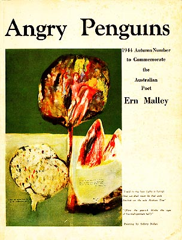

Henry Quince
Adjustable Wench
A flibbertigibbet of little account, I thought her;
She’d do for a time, though young for this old grizzled beard.
It little deterred me that people might think her my daughter —
Just so long as she gave me my oats, though I boozed and I leered.
A dancer she was, so she told me; I asked her no more;
Some coyness of manner suggested she’d rather not tell
What species of dancing she did, or what costume she wore
Or discarded at work; but if cynics can fall, then I fell.
It wasn’t her bedcraft alone, though that was a marvel.
(I’d call it an effing one, aiming at literal fact,
But that would fall short, for this was sublimely ineffable,
The ultimate premier cru of the physical act.)
It was always at my place we met, a long afternoon,
And we never examined why this was the pattern, not that.
But one day, one morning, I answered a whim, none too soon,
And strolled to the street where she lived, and called at her flat.
She came to the door in a robe, and missed not a beat.
She welcomed me in, to strains of Saint-Saëns, and I took
It all in with a glance, and turned on my heel in red heat —
The man in her bed, and the wine, and the poetry book.
So I left in a furious temper, slamming the door.
The old story, yes; but what cut me right to the core
Was the man — some years older than I, a wreck on the shore
Of old age — and her red and black pointe shoes ranged on the floor.

Ern Malley’s Account of the Affair
A fiction I, who was conceived and born
and storied one fanciful barracks afternoon
when two young formalists in poetry,
idle young soldiers, sat in their Melbourne room
and, in a fever of glee and laughter, wrote me.
They cobbled together my oeuvre first, from motley
sources: a map-reading guide, a Wörterbuch,
a wartime primer on insect-borne diseases...
They used what they had, like ad lib cooks, astutely,
often to strange surreal effect, which pleased them.
Their aim was to show up forties modernist verse
for the empty sham that they believed it to be —
to have my surrealist poems taken for real,
by Harris, an Adelaide poet-editor, firstly,
then maybe by Eliot, Treece, or Thomas in Wales.
My verses done, the two of them called me deceased.
As my sister they sent in samples, her covering letter
artfully artless. Hooked, he printed and praised them,
was echoed by pundits — Eliot, Herbert Read
and others, who, though some said these antics amused them,
held to their views long after the fraud was known,
declaring the Malley poems a triumph — better
than any that either one had written before.
Poor Harris, first caught by the joke, was hit by another
when next he was forced to defend my verse in the courts!
In a farcical trial, Detective Vogelsang
of the local police pointed to certain words
of alleged obscenity, one of which was “incestuous” —
a term he could no more construe than mimic birdsong:
even non-readers found my verse licentious!
And what of the perpetrators, the two who made me?
The work, they declared, was quite devoid of merit —
a joke, an experiment, bad and rubbishy verse.
So where’s the truth? Can art come from insincerity?
In the shakedown of time, which view has fared the worse?
The last laugh’s mine. They killed me with Grave’s Disease
at twenty-five. Six decades on, I’ve outlived
them both; my works are debated still, stand fast
when theirs, from days of uniforms or civvies
alike, are all but forgotten, are formal dust.
Ah, the dagger of malice, that wounds the most
its wielder! As if we ever really pretend,
or ever stop! Each work has a fiction or myth
or persona for author, and every fiction exposes
something unconscious, some unintended truth.
[Link: Ern Malley ]
À La Belle Étoile
for Phil McCann
I think of a summer night when we,
vivid and voluble with promise,
sat out for hours under a ceiling of stars,
swinging our youthful legs in the breeze,
blind drunk on happy tomorrows.
Though only death can stop time dead,
time that evening slowed for a freeze-
frame moment, a limelight flash of self-recall,
which still revisits me when dreams
tug at memory’s sleeve.
I think of us then, so bold, so sure
that both were movers-and-shakers-to-be;
and I think of us now — you, past pain, gone in
somewhere beneath a timeless roof,
and I still under the stars.
Lost Wax
His wrestler’s fingers, huge beneath the loupe,
fashion the wax, plying a slender blade
with fine control. This lizard eye, this blind
eye bulging, pared minutely with its droop
of lid, is but a ghost-precursor, made
to bring to birth the eye that’s in his mind,
the lizard eye of silver, every groove
and fold and contrast metalled into life.
So too this waxy scaliness of tail
must conjure lizard skin at one remove.
Nor is this fact peculiar to the knife:
art must look past what burns away, or fail.
And still, of all the lost wax lines I write
not one has turned to silver in her sight!
Implicate Order
You know the kind of puzzle where you slide
plastic tiles around — say fifteen squares
of picture fragments? Have you ever eyed
that one blank space untempted, as it dares
you from what seems disorder? Go on, prove
your human skill to straighten, set things right,
undo the chaos; and if you try one move,
you’ll try a chain of them to bring to sight
the hidden, not lost. What if the world is all
and always thus — its order part-implicit,
folded in? We think that what we call
disorder is mere randomness, but is it?
What if this folding in and out’s the face
and core and quiddity of time and space?
[Link: David Bohm ]
Henry Quince has been an academic, jazz pianist, editor, copywriter, and voiceover man. A recidivist wanderer, he lives in Australia. He’s had the odd poem or two published here and there. Read some of Henry’s work at his website.
|